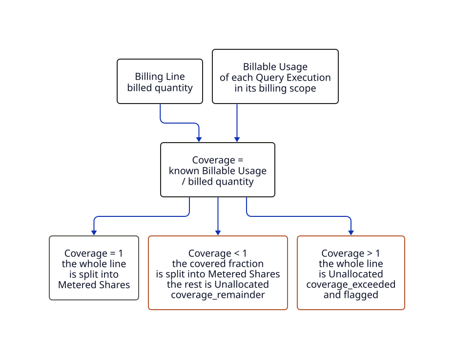

Allocation and Coverage
This page explains how a Calculation Run splits a Billing Line, and why it splits a metered line only as far as Coverage allows. The decisions are in ADR 0007, ADR 0016, ADR 0017 and ADR 0023, and the rules are in spec 03. They stay authoritative.
The same inputs give the same Allocations
A Calculation Run is deterministic. It uses decimal amounts, stable rounding and a versioned Allocation Policy. Running it again on the same inputs stores nothing new. A changed policy gets a new version, and the Allocations it made before keep the old one, so any number can be traced to the rules that made it.
Three Allocation Targets
Every Allocation goes to one of three Allocation Targets:
- a Query Execution, the unit a provider actually bills for;
- Idle, capacity that was paid for but had no observed activity;
- Unallocated, money with no Evidence, named with its reason.
A Model Execution or Workload Run is never a target. It gets money only as a Roll-up over its Identity Links. Failed and retried work is charged to its Query Execution and shown with its status, so a failure's cost stays visible.
A Metered Share needs measured Coverage
An Athena on-demand Billing Line bills a quantity of data scanned. Each Query Execution in the line's billing scope has a Billable Usage: what the provider bills for it, which is not always what it scanned. Coverage compares the two:
Coverage = known Billable Usage ÷ the Billing Line's billed quantity.

- At Coverage 1, the line is split by Billable Usage. Each share is a Metered Share: Allocation Category
direct, Confidencemetered_estimate. - Below 1, some of the history is missing. Only the covered fraction is split. The remainder is Unallocated as
coverage_remainder, rather than spread over the Query Executions that happen to be known. - Above 1, the known history claims more than was billed, which means something is wrong. The whole line is Unallocated as
coverage_exceeded, and flagged.
Coverage counts as 1 within half a unit of the last digit the provider bills in. A Metered Share is an estimate, so it is never labelled as exact.
Billing scope is accounting, not Evidence
A Query Execution is in a Billing Line's billing scope when it ran in the line's usage account and Region, in its workgroup when the line names one, and completed within the line's charge period. That makes it share the line's cost. It does not say which Model Execution ran it. A Query Execution with no Identity Link still counts toward Coverage and still gets its Metered Share. It just has no Roll-up (ADR 0023).
A worked example
The tutorial's bill has one Athena Billing Line of $6.00, for 0.001 TB scanned in workgroup demo. Two Query Executions are in its billing scope:
q-001succeeded and scanned 1,000,000,000 bytes. Its Billable Usage is 1,000 MB, or 0.001 TB.q-002is DDL that scanned 0 bytes. Its Billable Usage is 0.
Known Billable Usage is 0.001 TB, the same as the billed quantity, so Coverage is 1. q-001 gets a $6.00 Metered Share. Its Trusted Query Comment names Model Execution model.demo.orders, so the $6.00 rolls up to it. The bill's $4.00 S3 storage line is outside every policy, so it is Unallocated as ineligible.
The current Athena policy
Calculation Runs record their policy version, today allocation-engine/1+line-classification/1+athena-billable-usage/2+athena-billing-scope/2. athena-billable-usage/2 sets each Query Execution's Billable Usage:
- a failed one, or any one that scanned 0 bytes: 0;
- any other succeeded or cancelled one: the data it scanned, rounded up to the next MB, with a minimum of 10 MB;
- a queued or running one: 0 in that report;
- a billed one that reported no scan: unknown.
Units are decimal: 1 MB is 106 bytes.
These rules were checked against a real FOCUS export in issue #91. It showed that a query that scans nothing bills nothing, whatever its statement type, so version 2 replaced version 1, which charged such queries 10 MB. Allocations made under version 1 keep it. A Billing Line can cover several hours, and its billing scope is its whole charge period.
Athena billed two queries that finished seconds before an hour ended in the next hour's line. A query that finishes that close to an hour boundary can be scoped to the wrong line, which then stays Unallocated rather than misallocated (open question 25).